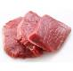
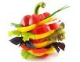

| Datum | Gericht 1 | Gericht 2 | Gericht 3 |
| 28.01.2013 | Pangasiusfilet mit Kartoffelstampf | Gyros mit Pommes | Penne mit Pesto Verde |
29.01.2013 | Penne Arrabiata mit Speck | Penne mit Pesto Rosso | Schweinefilet mit gruenem Pfeffer und Reis |
30.01.2013 | Pfannkuchen mit Kirschen | Tofugeschnetzeltes Asiatisch | Elcheintopf |
31.01.2013 | Birnenmilchreis | Penne mit Spinatsauce | Spaghetti Bolognese |
01.02.2013 | Safransuppe mit Straussenfilet | Pizza Hawaii | Kuerbissuppe mit Feta |
04.02.2013 | Pilzravioli mit Sauce Hollandaise | Chili con carne | Toast Hawaii |
05.02.2013 | Rouladen mit Rotkohl und Kartoffeln | Raclette | Forelle Muellerin Art |
06.02.2013 | Schokoladenfondue | Gemuesebratling mit Curryreis | Chickenburger |
07.02.2013 | Frischer Garnelensalat | Frittierte Mozzarellakugeln in Gorgonzolasauce | Huehner-Nudel-Auflauf |
08.02.2013 | Spinat mit Kartoffeln und Ei | Bunte Gemuesepfanne | Truthahn mit Blumenkohl |
11.02.2013 | Tofu-Reispfanne | Haehnchenbrust in Salbeisauce m. Reis | Belgische Pommes Rot-Weiss |
12.02.2013 | Seelachs mit Kartoffel-Knusperkruste | Nudelsuppe | Rindergeschnetzeltes mit Reis |
13.02.2013 | Bohneneintopf Mexiko | Italienische Gemuesepfanne mit Haehnchen | Moussaka |
14.02.2013 | Cordon Bleu mit Kartoffeln | Truthahn in Estragonsauce mit Reis | Gnocchipfanne |
15.02.2013 | Penne Arrabiata Vegetarisch | Omelette mit Kartoffeln | Asiatisches Schweinegeschnetzeltes |